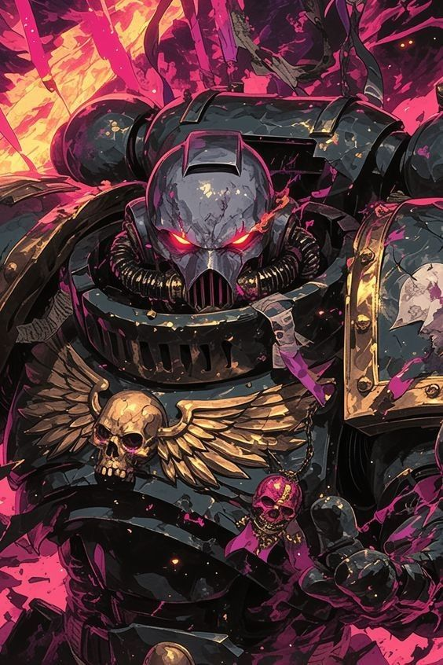
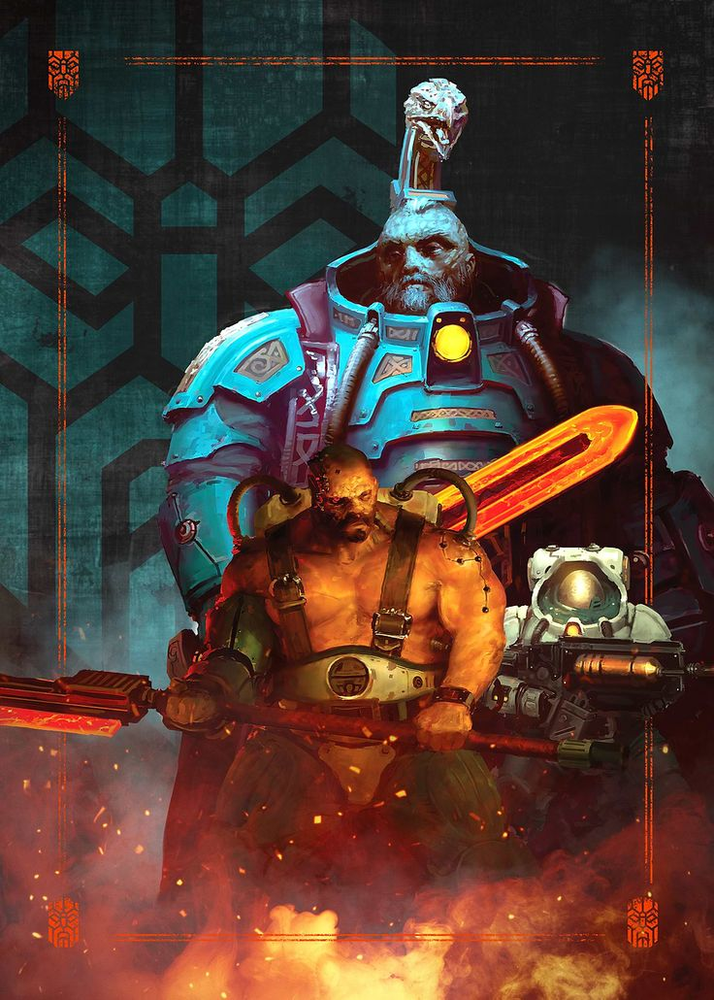
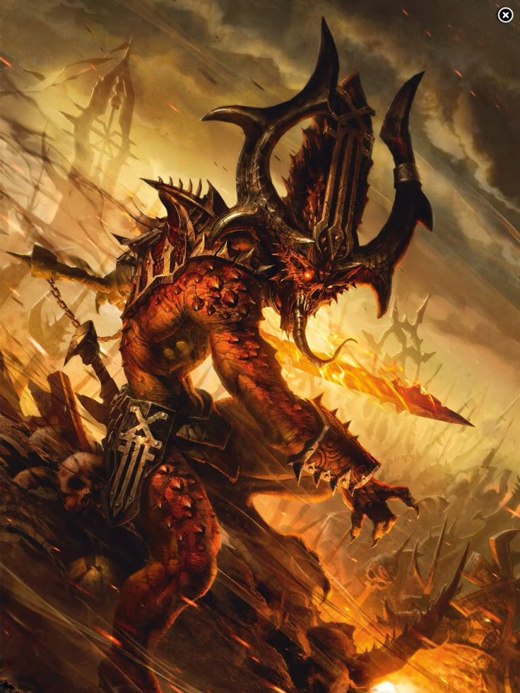
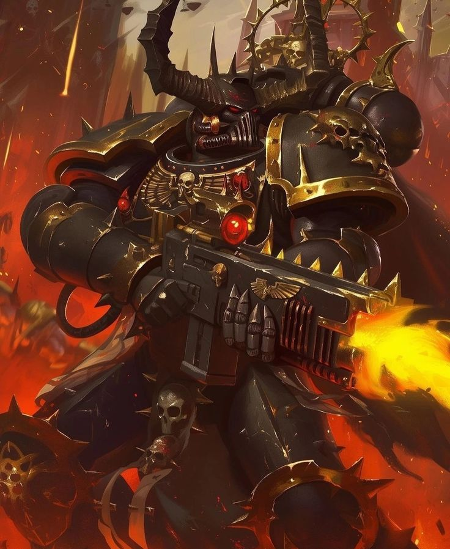
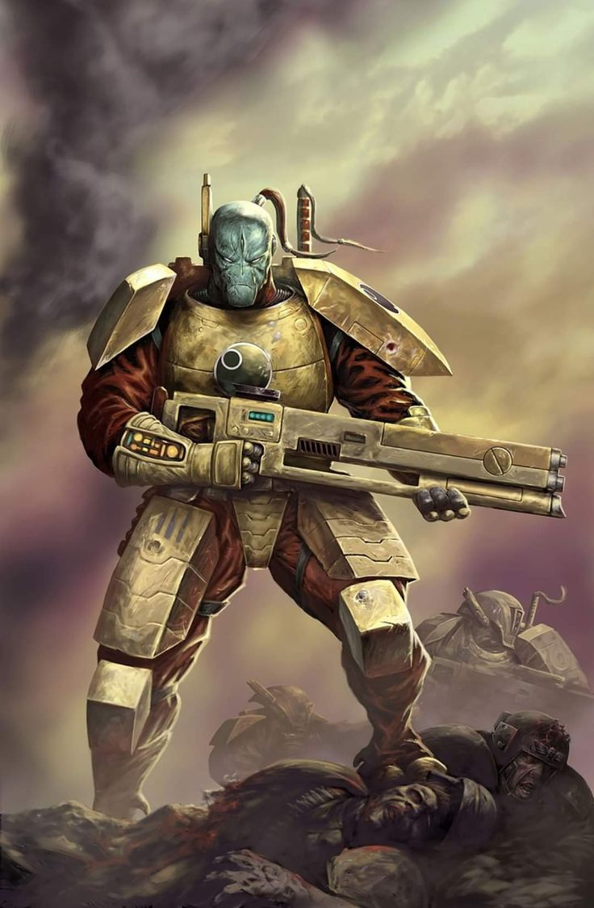
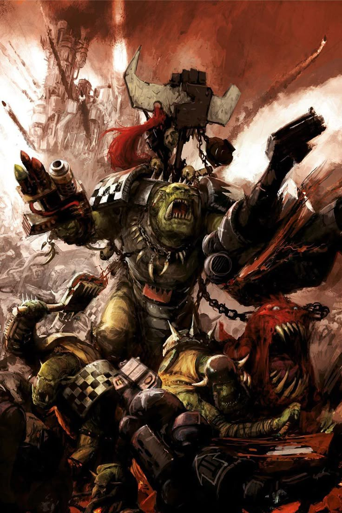
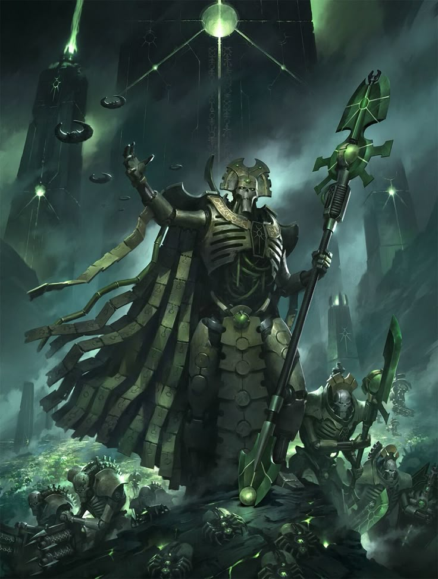
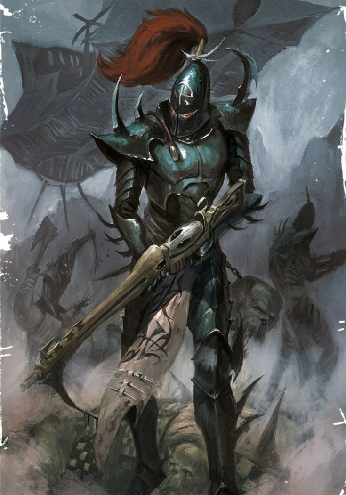

El Astra Militarum, también conocido como la Guardia Imperial, es el ejército principal de la humanidad. Está compuesto por incontables soldados que defienden los mundos imperiales mediante disciplina, números y potencia de fuego.

Los Marines Espaciales son superhumanos genéticamente modificados creados para proteger al Imperio de la Humanidad. Son los guerreros más emblemáticos de Warhammer 40,000 y combaten amenazas de toda la galaxia.
El Astra Militarum, también conocido como la Guardia Imperial, es el ejército principal de la humanidad. Está compuesto por incontables soldados que defienden los mundos imperiales mediante disciplina, números y potencia de fuego.

El Adeptus Mechanicus es una organización tecnológica del Imperio dedicada a preservar y desarrollar el conocimiento científico. Sus miembros veneran las máquinas como objetos sagrados y reemplazan partes de su cuerpo con implantes cibernéticos.

Las Hermanas de Batalla son guerreras fanáticamente devotas al Emperador. Combinan fe inquebrantable, entrenamiento militar y armamento avanzado para combatir herejes y enemigos del Imperio.

Las Ligas de Votann son descendientes de antiguos colonos humanos adaptados a la vida en entornos extremos. Poseen tecnología muy avanzada y una sociedad guiada por poderosas inteligencias ancestrales llamadas Votann.

Los Demonios del Caos son entidades sobrenaturales nacidas de las emociones y energías de la Disformidad. Buscan corromper, destruir o someter la realidad material según la voluntad de sus dioses.

Los Marines Espaciales del Caos son antiguos guerreros del Imperio que traicionaron a la humanidad. Potenciados por los poderes del Caos, combaten para conquistar y corromper la galaxia.

Los Tiránidos son organismos extraterrestres que consumen toda la biomasa de los mundos que invaden. Funcionan como una inmensa mente colmena y evolucionan constantemente para adaptarse a sus enemigos.

Los T'au son una joven civilización alienígena que promueve la filosofía del Bien Supremo. Destacan por su avanzada tecnología, el uso de armaduras de combate y su estrategia de guerra a distancia.

Los Orkos son una especie guerrera que vive para luchar y causar destrucción. Su sociedad se basa en la fuerza, y su tecnología funciona gracias a su peculiar psicología colectiva.

Los Necrones son una antigua civilización de guerreros mecánicos inmortales. Tras despertar de un largo letargo, buscan recuperar el dominio de la galaxia que una vez les perteneció.

Los Drukhari son una raza de elfos oscuros que habitan la ciudad extradimensional de Commorragh. Sobreviven alimentándose del sufrimiento ajeno y realizan incursiones para capturar esclavos.